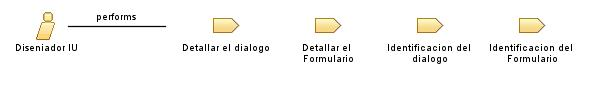

|
| El Diseñador UI en el proceso de la frutería crea la interfaz visual del sistema de compra de insumos a proveedores |
| Synonyms: Diseñador de Experiencia de Usuario, Diseñador de Interfaz de Usuario, Especialista en Diseño de UI |
|
Relationships
 |
| Primary Performs |
|
| Modifies |
|
Main Description
| El Diseñador UI en el proceso de la frutería se encarga de diseñar la apariencia visual de la aplicación, incluyendo diseño
de pantallas, disposición de elementos, paleta de colores y estilo visual. Trabaja en estrecha colaboración con el equipo
de desarrollo y los analistas de negocio para comprender los requisitos funcionales y de diseño del sistema. Además,
realiza pruebas de usabilidad para asegurar que la interfaz de usuario sea fácil de usar y satisfaga las necesidades del
usuario final. El Diseñador UI también puede crear prototipos interactivos y realizar iteraciones basadas en
retroalimentación de los usuarios para mejorar continuamente el diseño |
Staffing
| Skills | Dominio de herramientas de diseño gráfico y prototipado, conocimiento de principios de diseño de interfaz de usuario,
capacidad para trabajar en equipo y comunicar ideas visualmente, comprensión de las tendencias de diseño y experiencia del
usuario |
| Assignment Approaches | Crear diseños visuales para las interfaces de usuario del sistema, colaborar con el equipo de desarrollo para garantizar la
viabilidad técnica de los diseños propuestos, realizar pruebas de usabilidad y obtener retroalimentación de los usuarios,
iterar en el diseño basado en la retroalimentación recibida, asegurar la coherencia del diseño en todas las partes del
sistema |
| Synonyms | Diseñador de Experiencia de Usuario, Diseñador de Interfaz de Usuario, Especialista en Diseño de UI |
Key Considerations
| Diseñador UI, interfaz de usuario, diseño visual, usabilidad, prototipado |
|